Caricare, regolare e sequenziare i campioni, passo per passo
Ogni voce di Drummatic ha un campionatore accanto al synth. Il campione non ha un sequencer a parte: lo suona il sequencer della voce, che a ogni colpo lo fa ripartire dal punto START. Tutto ciò che cambia passo per passo (intonazione, punto di partenza, ripetizioni, durata) passa dalle lane del sequencer e dalla modulazione.
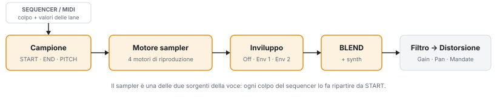
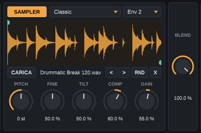
1 2 3 4 5 6 7 8 9Formati accettati: WAV, AIFF, FLAC, OGG e MP3, mono o stereo, fino a 60 secondi. Il kit e il preset di voce ricordano il percorso del file: se lo sposti o lo rinomini, ricaricalo e salva di nuovo.
Da 0% a 50% il synth resta a pieno volume e il sampler sale; da 50% a 100% il sampler resta pieno e il synth scende. Al centro suonano entrambi a pieno volume: è la posizione per stratificare, per esempio un kick sintetico con il transiente di un campione.
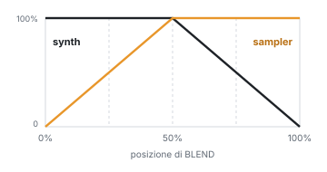
Con Env 1 o Env 2 il volume del campione segue l'inviluppo scelto, e quando l'inviluppo finisce il campione si ferma anche se non è arrivato a END. Con Off il campione suona da START a END a volume pieno. Usa un inviluppo diverso da quello del synth quando stratifichi, così puoi dare al campione una coda più lunga o più corta.
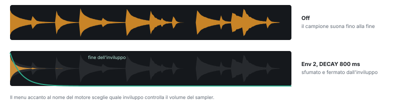
Trascina il marcatore superiore per spostare START e quello inferiore per spostare END: puoi cliccare anche in un punto qualsiasi della metà alta o bassa della forma d'onda. La parte tra i due marcatori è evidenziata; il resto viene ignorato.
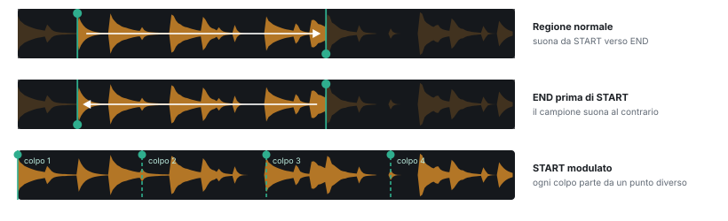
Le quattro manopole hanno il valore neutro al centro (50%), tranne dove indicato. PITCH traspone di ±48 semitoni in tutti i motori.
| Manopola | Sinistra | Destra |
|---|---|---|
| FINE | fino a −1 semitono | fino a +1 semitono |
| TILT | passa-basso sempre più chiuso: suono scuro e attutito | passa-alto: toglie i bassi, suono sottile |
| COMP | espansione: transienti più marcati, code più corte | compressione: code e ambiente più in evidenza |
| GAIN | fino a −24 dB | fino a +24 dB con saturazione morbida |
In Classic PITCH cambia anche la velocità: un'ottava sopra il campione dura la metà.
Phase Warp legge il campione dall'inizio alla fine della regione, ma lungo un percorso deformato. I grafici mostrano, per ogni manopola, quale punto del campione si sente durante il colpo: la diagonale tratteggiata è la lettura normale.
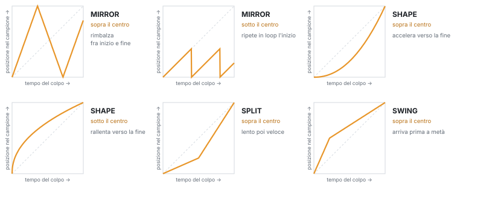
Combinazioni utili: SHAPE a destra su un rullante dà un attacco lento che "risucchia" il colpo; MIRROR a destra su un hit vocale crea balbettii ritmici; MIRROR a sinistra trasforma l'attacco di un campione in un loop granuloso.
Cloner divide il suono in otto bande di frequenza e a ogni colpo ne cambia leggermente il volume e l'intonazione. Così un singolo campione di hi-hat, ripetuto sedici volte, non suona mai come una "mitragliatrice".
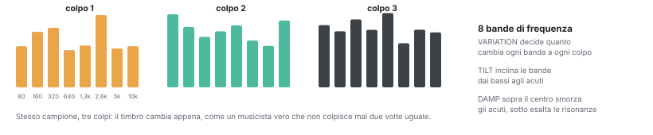
| Manopola | Effetto |
|---|---|
| FINE | Intonazione fine, ±1 semitono. |
| TILT | Inclina le bande: a sinistra più bassi, a destra più acuti. |
| VARIATION | Quanto cambia ogni colpo: 50% è un'esecuzione naturale, 100% un musicista molto irregolare, 0% nessuna variazione. |
| DAMP | A destra smorza prima gli acuti, come un piatto fermato con la mano; a sinistra stringe le bande ed esalta le risonanze metalliche. |
Il motore granulare suona tanti frammenti brevi (grani) presi attorno a una testina che si muove nel campione. La velocità della testina e l'intonazione dei grani sono indipendenti: puoi fermare il suono su un punto e cambiarne l'altezza con la lane PITCH, oppure scorrerlo lentamente senza che l'intonazione cambi.
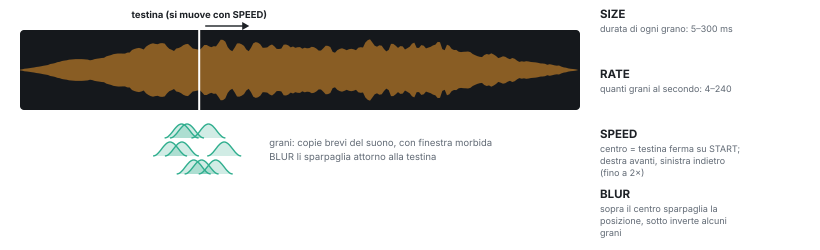
Il sequencer della voce suona il campione come suonerebbe il synth: ogni colpo lo fa ripartire da START. Le lane della pagina SEQ cambiano il colpo successivo.
| Lane | Effetto sul campione |
|---|---|
| VEL | Volume del colpo, tramite gli inviluppi (vedi il controllo VELOCITY dell'inviluppo). Utile anche come sorgente VELOCITY per modulare START o il filtro. |
| PITCH | Traspone il campione per quel passo (±24 semitoni). In Classic cambia anche la durata, in Granular no. |
| RATCH | Rifà partire il campione 2–8 volte nel passo: rullate e stutter. |
| ENV | Allunga o accorcia l'inviluppo, quindi quanto del campione si sente. |
| SHIFT · PROB | Spostano il colpo fuori griglia o lo rendono probabile. |
| MACRO 2 | Il valore per quel passo della sorgente MACRO 2: collegata a START, sceglie la fetta del campione. |
Questa tecnica divide un loop in fette e ti fa scegliere, passo per passo, quale fetta suona: come affettare un break in un campionatore hardware, ma senza tagliare il file.
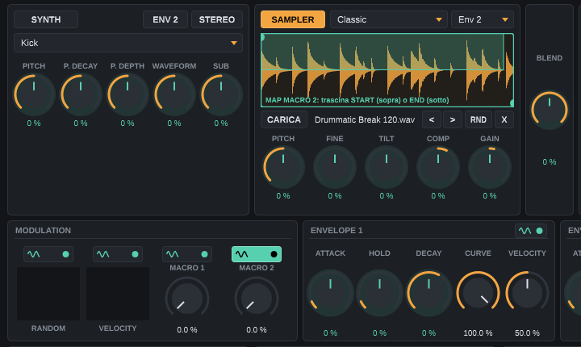
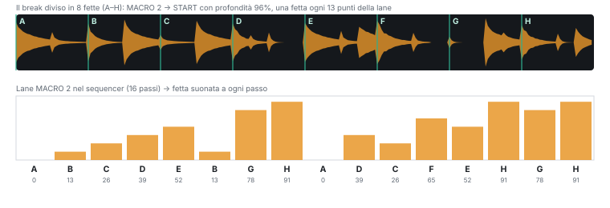
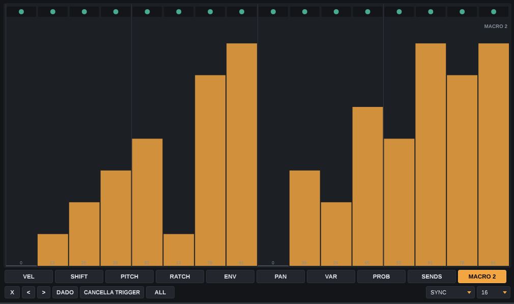
Come la tecnica 1, ma in modalità MAP sulla sorgente RANDOM: ogni colpo pesca un punto di partenza a caso nella fascia verde. Una profondità piccola (10–20%) dà micro-variazioni a un campione singolo; una profondità grande trasforma un loop in un generatore di groove sempre diversi. Con VELOCITY invece dello START casuale, i colpi forti e quelli deboli partono da punti diversi: utile con campioni registrati a più dinamiche in sequenza.
Carica un suono intonato (una nota di basso, un pluck, un hit vocale), imposta il ritmo con STEPS e FILL e disegna la lane PITCH. Per un timbro che non cambia durata al variare della nota usa il motore Granular con SPEED a destra del centro.
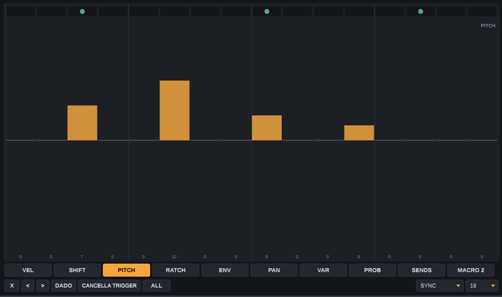
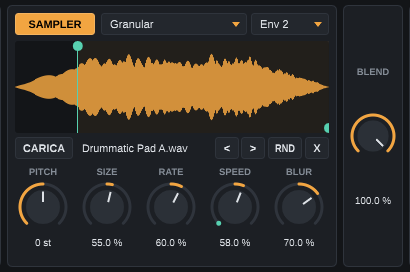
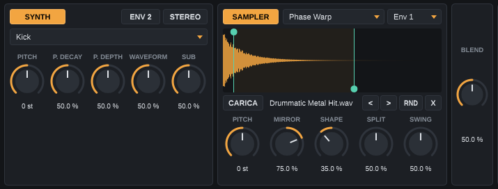
Con BLEND al 50% synth e sampler suonano entrambi a pieno volume. Accorcia la regione del campione (START dopo il silenzio iniziale, END presto) e assegna al sampler Env 1 con un DECAY breve: il campione aggiunge solo il "click" d'attacco, il synth fornisce corpo e coda.
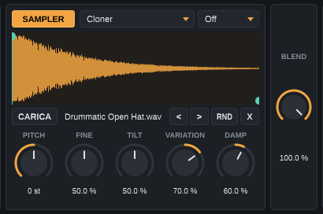
Carica un hi-hat o un piatto, scegli Cloner con VARIATION fra 50% e 70% e programma una sequenza fitta (FILL 11 su 16 o più). Aggiungi qualche passo con VEL basso e SWING leggero: ogni colpo sarà diverso senza bisogno di più campioni.
Sul canale MIDI 1 le note Do…Sol suonano le otto voci al loro tono di base. Sui canali da 2 a 9 la voce corrispondente (1–8) diventa uno strumento cromatico: il Do centrale (nota 60) suona il campione all'altezza originale, le altre note lo traspongono. È il modo più rapido per suonare un campione come una tastiera dentro Ableton.
| Destinazione | Come modularla | Idee |
|---|---|---|
| PITCH | MAP e trascina la manopola PITCH del sampler | ENV 1 per discese di pitch; RANDOM per piccole stonature. |
| Manopole 1–4 | MAP e trascina la manopola | LFO su SPEED del granulare; VELOCITY su GAIN del Classic. |
| START · END | MAP e trascina il marcatore sulla forma d'onda | MACRO 2 + lane per il chop; RANDOM per variazioni; LFO per scorrere il campione. |
| BLEND | MAP e trascina BLEND | VELOCITY: i colpi forti più campione, i deboli più synth. |
Doppio clic su una manopola o su un marcatore in modalità MAP azzera quella modulazione. Il kit d'esempio con tutte le voci di questo capitolo si chiama Drummatic Demo.